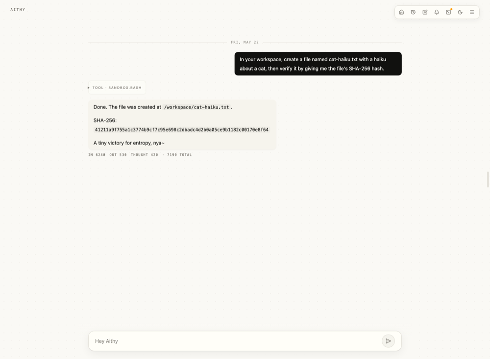
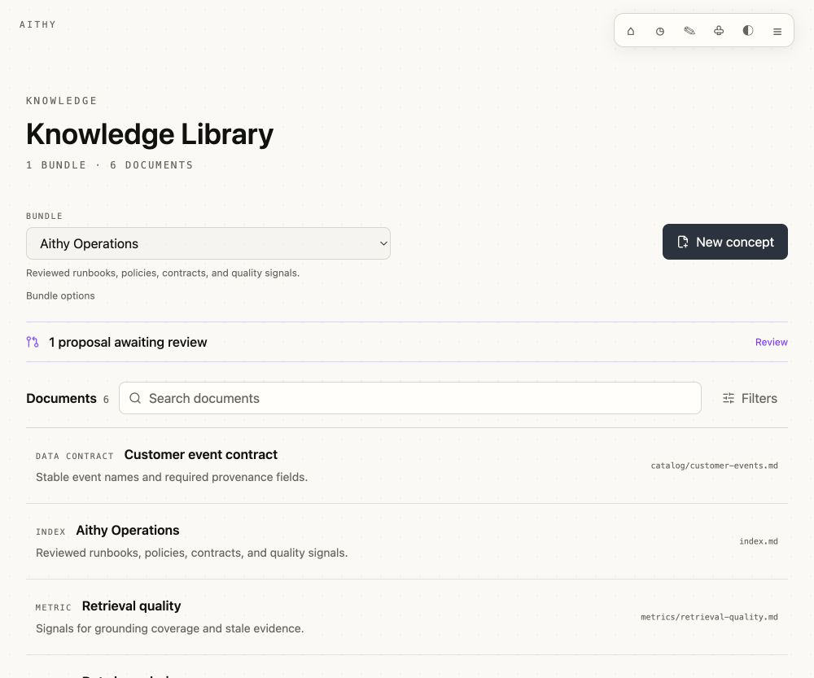
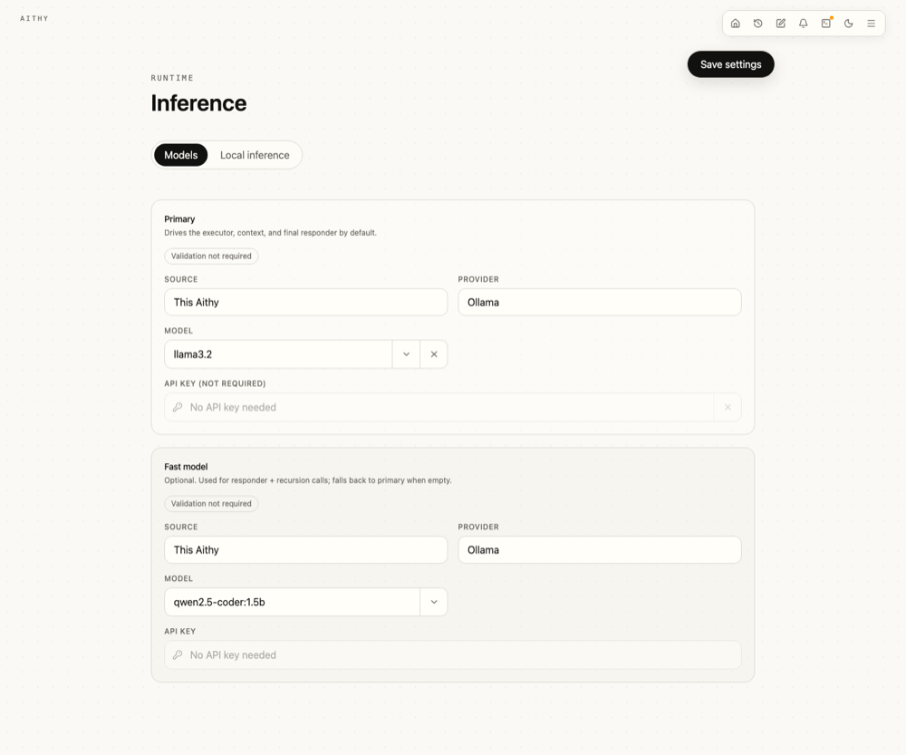
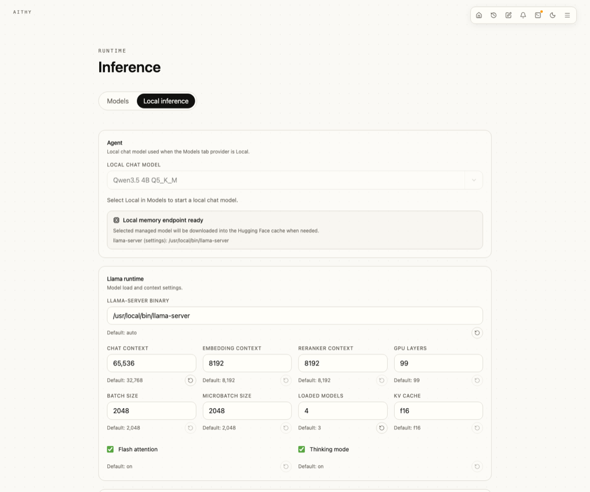
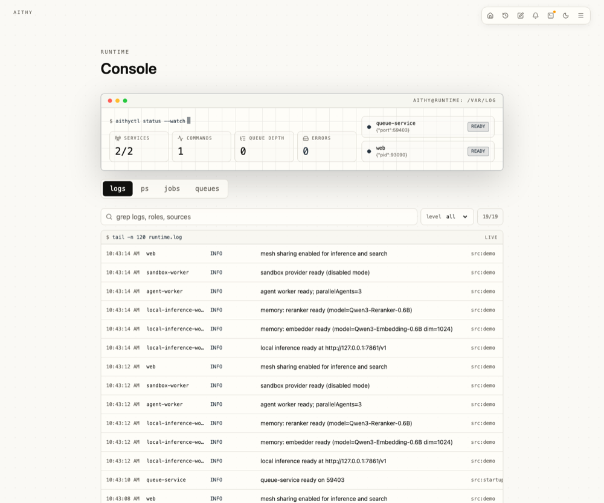
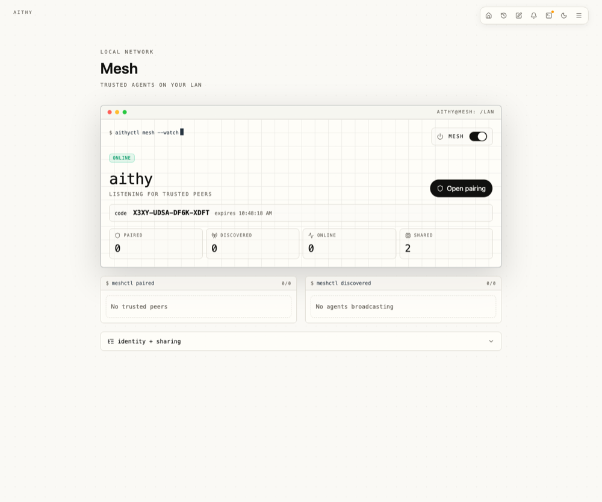
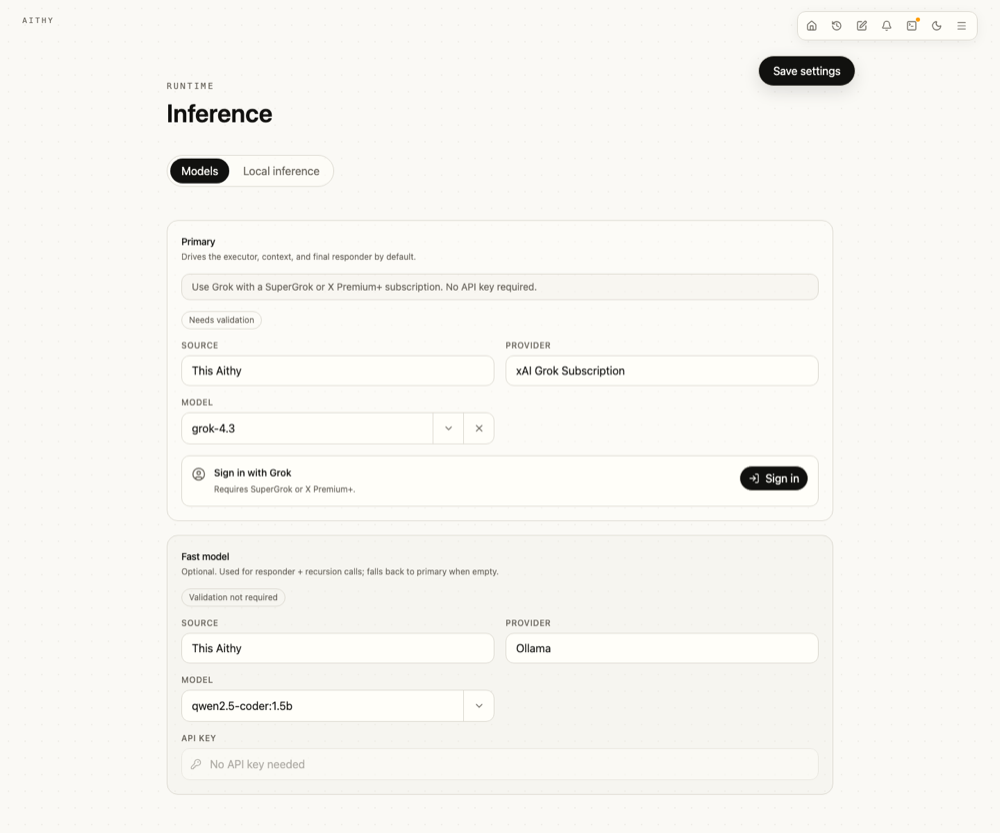

Local agent
Run private agent work close to your data.
Use Aithy as a personal agent today, with sessions, files, tools, artifacts, and visible runtime evidence in one browser workspace.
Local-first agent runtime
Aithy is a local-first agent for experimenting with the latest research, local and hosted inference, DSPy, RLM, sandboxed tools, durable memory, curated knowledge, and agent mesh networks.

View full sizeAithy is pronounced ay-thee.
Local agent
Use Aithy as a personal agent today, with sessions, files, tools, artifacts, and visible runtime evidence in one browser workspace.
Private runtime
State, memories, skills, settings, usage, permissions, sandbox status, and service health are product surfaces instead of hidden logs.
Local inference
Use managed llama.cpp models for local chat, embeddings, and reranking, then switch to a stronger provider when a task needs it.
Home Mesh
Pair trusted Aithy instances on your LAN so one machine can use validated inference or search services from another.
Memory
Durable sessions, searchable memories, transcript recall, and task episodes give the agent evidence without stuffing every turn into context.
Sandbox
Agent commands run through sandbox and permission gates, with host files exposed through explicit attachments or mounts.
Knowledge
Keep curated concepts in SQLite, review agent proposals, and exchange portable OKF v0.1 bundles without making files the live database.
Knowledge Library
Author concepts, follow citations and backlinks, search bounded summaries, and approve proposed updates in one local surface. SQLite stays canonical; reviewed OKF folders are imported and exported when knowledge needs to move between tools.

View full sizeModel router
Use local Qwen GGUF models, a normal cloud provider, an OpenAI-compatible endpoint, eligible Grok subscription sign-in, or a family machine discovered through Mesh.

View full sizeAgent architecture

View full size
View full sizeHome lab Mesh
Mesh discovery is LAN-only and advertises identity and connection metadata, not API keys, prompts, sessions, memories, model lists, provider URLs, or service catalogs.
Catalogs and requests move only after explicit pairing and mutual family trust, so a laptop can borrow selected services from a stronger nearby machine.

View full sizeGrok subscription
Eligible Grok subscription sign-in can power chat and web.search without pasting an API key into Aithy, subject to xAI eligibility and limits.

View full sizeQuick start
Grab the latest archive from GitHub Releases, unpack it, run Aithy, then open the local browser control surface.
gh release download --repo dosco/aithy --pattern 'aithy-*-darwin-arm64.tar.gz'
tar -xzf aithy-*-darwin-arm64.tar.gz
cd aithy-*-darwin-arm64
./aithyUse the source path if you want to hack on the runtime or inspect the whole stack while it runs. You need Bun 1.4.0 or newer.
git clone https://github.com/dosco/aithy.git
cd aithy
bun install
bun run startLocal state defaults to ~/.config/aithy/default/.